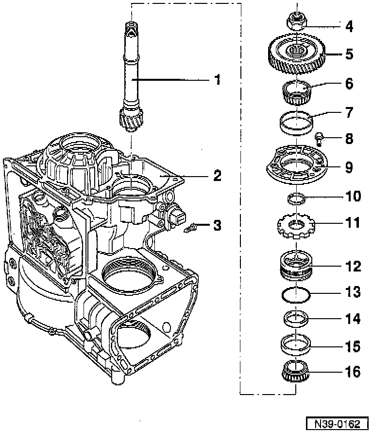
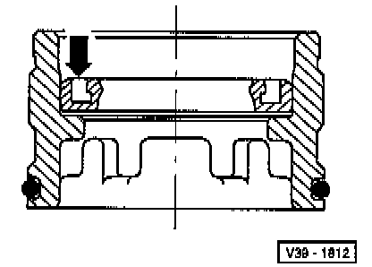
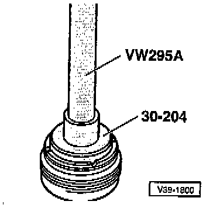
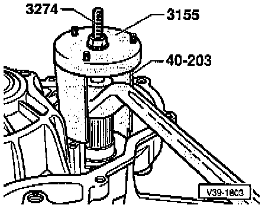

Drive Pinion

COMPONENT NOTES AND INFORMATION
NOTE: To remove the drive pinion, the selector shaft must be removed after taking out the parking lock, refer to Parking Lock Remove/Install.
1 Drive pinion
- Number of teeth. Application and ID
- Adjusting. Adjustments
- Removing, refer to Fig. 8, below.
2 Transmission housing
3 Screw,
- Tighten to: 12 Nm (9 ft lb)
- Remove screw before removing or installing bearing supporting ring item -12-.
- Install with suitable sealing compound
4 Hex nut
- Tighten to: 250 Nm (184 ft lb)
- Engage parking lock to remove or install
- Secure with drift
5 Output gear
- Number of teeth. Application and ID
- Pulling off, refer to Fig. 1, below.
- If signs of damage exist, always replace input gear and output gear together
6 Tapered roller bearing inner race
- Pulling off, refer to Fig. 2, below.
- Pressing on, refer to Fig. 3, below.
7 Tapered roller bearing outer race
- Drive out with drift
- Pressing in, refer to Fig. 4, below.
8 Bolt
- Tighten to: 25 Nm (18 ft lb)
9 Bearing cap
10 Shim
- Determining thickness. Adjustments
11 Parking lock gear
- Rounded side faces teeth of drive pinion
12 Bearing supporting ring,
- Tighten to: 200 Nm (148 ft lb)
- Remove screw -item 3- before removing or installing bearing supporting ring.
- Removing or installing Fig. 5, below.
- Bearing supporting ring cannot be removed until the selector shaft has been removed, refer to Parking Lock. Service and Repair
- Install bearing supporting ring carefully.
Sealing lip and spring must not be damaged.
- Supporting ring with seal, refer to Fig. 6, below.
13 O-ring
- Always replace
- Place onto bearing supporting ring -item 12-
14 Oil seal for drive pinion
- Remove with screwdriver
- Installation position, refer to Fig. 6, below.
- Driving in, refer to Fig. 7, below.
15 Tapered roller bearing outer race
- Driving in, refer to Fig. 9, below.
16 Tapered roller bearing inner race
- Drive off with drift
- Pressing on, refer to Fig. 10, below.
PROCEDURES

Fig. 1 Output gear, pulling off
- (-A-) Kukko 20-10 and Matra V 172 pulling hooks.

Fig. 2 Tapered roller bearing inner race, pulling off
- Place press piece onto collar of output gear.

Fig. 3 Tapered roller bearing inner race, pressing on

Fig. 4 Tapered roller bearing outer race, pressing in

Fig. 5 Bearing supporting ring, removing and installing
- Remove locking bolt.
- (-A-) Torque wrench
- Tighten bearing supporting ring to 200 Nm (148 ft lb) and secure with locking screw.
Install screw with suitable thread sealing compound.

Fig. 6 Bearing supporting ring with seal for drive pinion
- Installation position of seal:
Open side (arrow) faces towards tapered roller bearing outer race

Fig. 7 Drive pinion oil seal, driving in
- Install oil seal so that sealing lip faces special tool 30-204.

Fig. 8 Drive pinion, removing

Fig. 9 Tapered roller bearing outer race, driving in
- Insert drive pinion with tapered roller bearing inner race, then drive in outer race.

Fig. 10 Tapered roller bearing inner race, pressing on